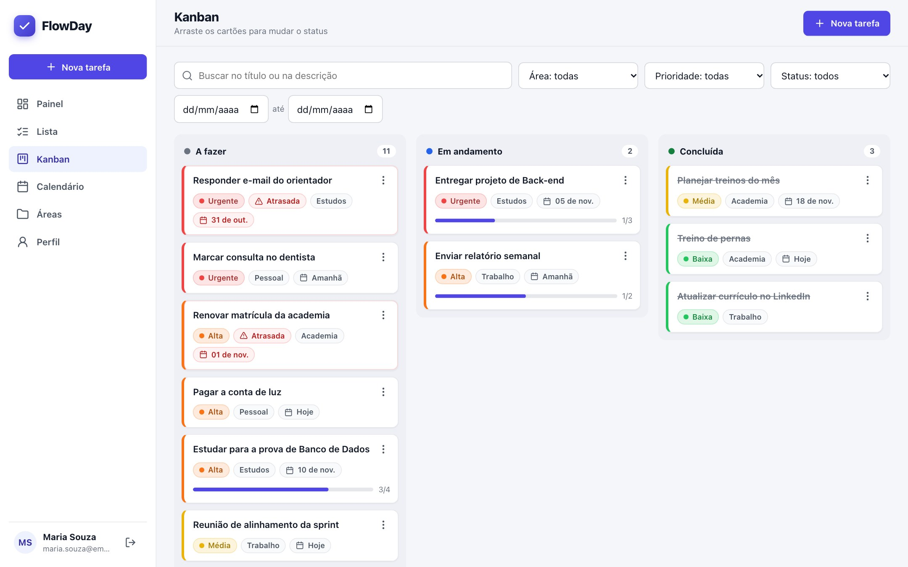
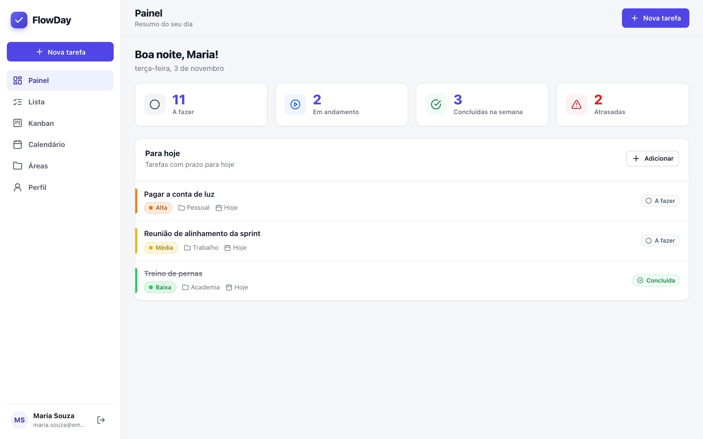
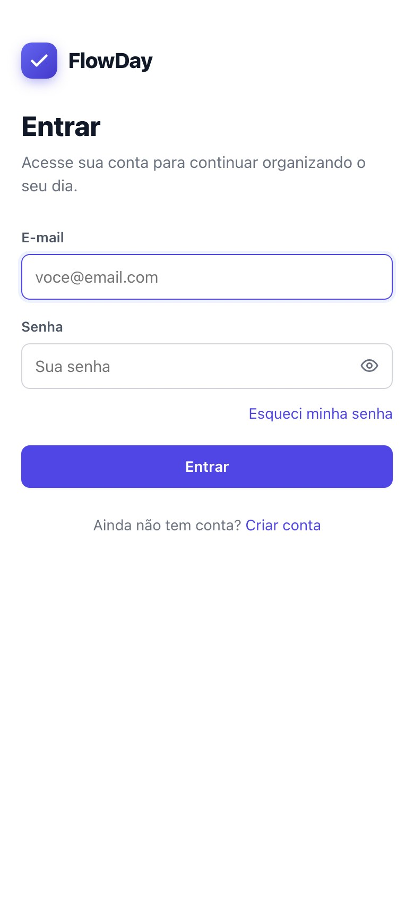
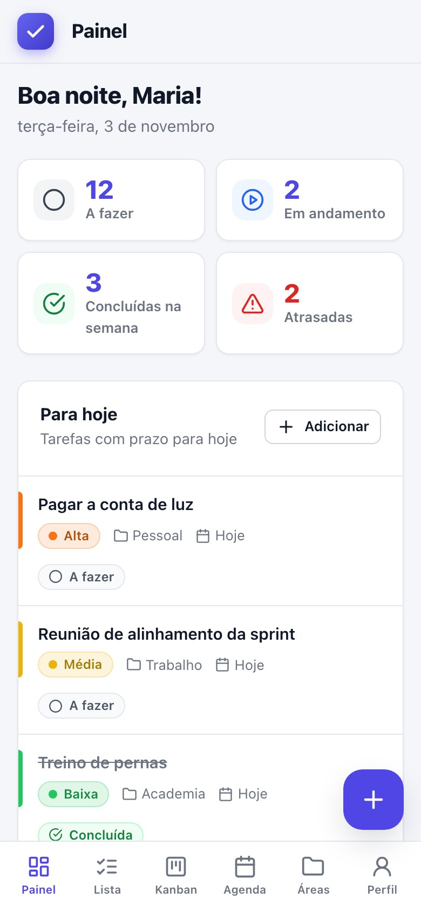
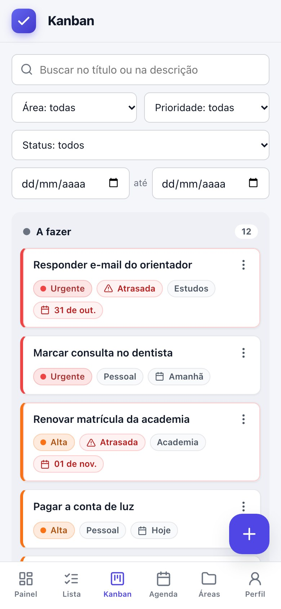
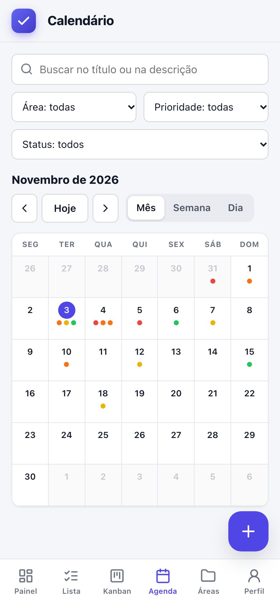
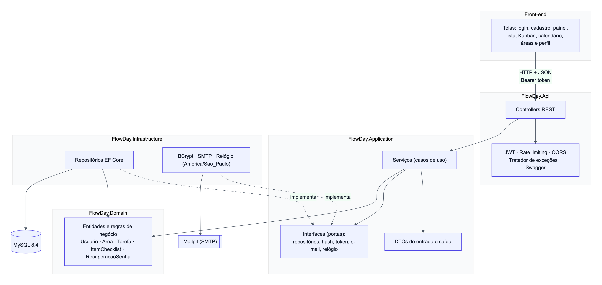

Seu dia em fluxo, sem esquecer nada.
O FlowDay reúne demandas pessoais, de trabalho, estudos e lazer em um só lugar: tarefas com checklist, prioridades por cor, prazos sob controle e visualização em lista, Kanban e calendário.

Tudo o que você precisa para organizar o dia
Simples de aprender, completo para quem concilia estudos, trabalho e vida pessoal.
Checklist com progresso
Divida cada tarefa em até 50 itens e acompanhe o percentual concluído. A tarefa só é concluída quando todos os itens estiverem prontos.
Lista, Kanban e calendário
Três formas de ver as mesmas tarefas, com busca e filtros que valem em todas. No Kanban, é só arrastar o cartão.
Prioridade por cor e rótulo
Baixa, Média, Alta e Urgente, sempre com cor e texto, para ninguém depender só da cor.
Prazos e atrasos
Tarefas atrasadas são destacadas automaticamente, e o painel mostra o que vence hoje e o que foi concluído na semana.
Áreas da vida
Pessoal, Trabalho, Estudos, Lazer e Geral já vêm prontas; crie outras como Academia ou TCC.
Seguro de verdade
Senhas com BCrypt, JWT de 60 minutos, bloqueio após 5 tentativas, recuperação de senha por e-mail e dados visíveis só para o dono.
Conheça o FlowDay por dentro
Prints do sistema em funcionamento. Clique na imagem para ampliar.

No computador e no celular
No celular, o menu vira uma barra inferior, o botão de nova tarefa fica sempre à mão e o Kanban empilha as colunas, sem rolagem horizontal.

Login

Painel

Kanban

Calendário
Arquitetura limpa, do domínio à interface
As regras de negócio ficam nas entidades do domínio, sem depender de banco ou de HTTP. A API em ASP.NET Core só traduz requisições, e o front-end consome a API por JSON.
- Domain: entidades e as 23 regras de negócio
- Application: casos de uso, DTOs e interfaces
- Infrastructure: EF Core, MySQL, BCrypt e SMTP
- Api: REST, JWT, limite de requisições, Swagger e erros padronizados (RFC 7807)

API documentada e testada
Cada rota tem descrição, exemplos e códigos de resposta no Swagger. Os erros seguem um formato único, com mensagens em português, e as regras de negócio são cobertas por testes automatizados.
- CRUD completo de tarefas, checklist, áreas e perfil
- Isolamento total: um usuário nunca vê dados de outro
- Recuperação de senha com link de uso único
Do requisito ao código
Requisitos de negócio e de software, planejamento, diagramas e o documento de evidências com prints de todo o sistema.
BRD
Requisitos de negócio, regras RN01 a RN23 e fluxos de processo.
PDFERS
Requisitos funcionais e não funcionais, casos de uso e critérios de aceitação.
PDFPlanejamento
Cronograma, gráfico de Gantt, divisão de tarefas e riscos.
GitHubDiagramas
Casos de uso, classes, ER, sequência, estados e implantação.
GitHubDocumento de evidências
Solução, planejamento e execução, com prints de telas, Swagger, testes e banco.
WordREADME
Guia de uso, endpoints da API, segurança e tratamento de erros.
GitHubFuncionando em três comandos
O sistema roda localmente com Docker: banco, API, front-end e servidor de e-mail sobem juntos.
git clone https://github.com/HeberMacedo/FLOWDAY.git cd FLOWDAY
cp .env.example .env
Troque as senhas e a chave do JWT (mínimo de 32 caracteres) no arquivo .env.
docker compose up -d --build
| Aplicação | http://localhost:8081 |
| Swagger da API | http://localhost:8080/swagger |
| E-mails de teste | http://localhost:8025 |
Por que o sistema não abre direto nesta página? O GitHub Pages só hospeda arquivos estáticos. O FlowDay precisa da API em C#/.NET e do banco MySQL rodando, por isso a demonstração é feita com Docker, como descrito acima.